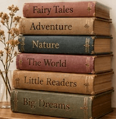

About Uma's
Uma's Books and Adventures is a non-profit bookshop built entirely on books that already had one home before finding their way to our shelves. Every title here has been read, released, and re-shelved by someone in Albi's English-speaking community — a paperback traded in after a summer read, a donated box from someone moving on, a hardback rescued before its next stop at the recycling bin.
Run by volunteers and open just a few days a week, the shop exists for one simple reason: to keep good English-language books affordable, in circulation, and easy to find — however far from home you happen to be. But the shelves are only half of it. As much as a bookshop, this is a meeting point — a small, unhurried space where anglophones and francophones, longtime Albigeois and newly arrived expats, cross paths over a shared shelf and swap more than books: languages, recommendations, and a little bit of home.
Get Involved

Donate
Every shelf here started as someone's donation. Bring your gently used English-language books by during opening hours, or get in touch to arrange a drop-off.
Get in Touch